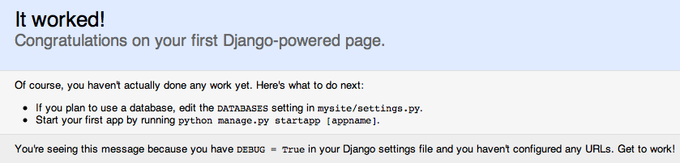

A quick introduction to the basics of Django projects, apps and Models.
Everything in Django stems from the project
When you install Django into a virtualenv, it provides a utility script, django-admin.py. This script can be used to create a new project:
(djangoenv)$ django-admin.py startproject mysite
Running this command will create a folder called ‘mysite’. It contains the following structure:
mysite
├── manage.py
└── mysite
├── __init__.py
├── settings.py
├── urls.py
└── wsgi.py
If after running the command you see a structure different than this, you’ll want to check the version of Django you installed. It should be 1.6.2.
Here’s what you have:
django-admin.py provides a hook for administrative tasks and abilities:
manage.py wraps this functionality, adding the full environment of your project.
When you look in the manage.py script Django created for you. You’ll see this:
#!/usr/bin/env python
import os
import sys
if __name__ == "__main__":
os.environ.setdefault("DJANGO_SETTINGS_MODULE", "mysite.settings")
...
The environmental var DJANGO_SETTINGS_MODULE is how the manage.py script is made aware of your project’s environment. This is why you shouldn’t rename the project package.
Since manage.py contains information about your specific environment, it is the tool you should use to run the development server:
(djangoenv)$ cd mysite
(djangoenv)$ python manage.py runserver
...
Django runs on port 8000 by default. Once it starts, you can view a new project by loading http://localhost:8000/. You should see this:
Last week we were introduced to the idea of an Object-Relational Mapper via SQLAlchemy. Django supplies its own ORM.
This ORM sits on top of the DB-API implementation you choose.
You must provide connection information through Django configuration.
All Django configuration takes place in settings.py in your project folder.
You can designate more than one database, if needed. The settings for all databases are formatted as a dictionary of dictionaries:
DATABASES = {
'default': {
'ENGINE': 'django.db.backends.postgresql_psycopg2',
'NAME': '<db_name>',
'USER': '<db_user_name>',
'PASSWORD': '<db_user_password>',
'HOST': '<host_for_db>',
'PORT': '<port_for_db>',
},
}
An app will usually define models. The tables for those models must be created. You do this by running the syncdb management command:
(djangoenv)$ python manage.py syncdb
Creating tables ...
Creating table auth_permission
Creating table auth_group_permissions
Creating table auth_group
...
You just installed Django's auth system, ...
Would you like to create one now? (yes/no):
You can (and should) add your first user at this prompt. While playing I strongly suggest you use the username ‘admin’ and give it the password ‘admin’. If you don’t, make sure you remember the values you use.
Obviously, in a production situation this is not the right thing to do.
If you forget, you can always create a new superuser by using the createsuperuser manage.py subcommand:
[django16env]
heffalump:foo cewing$ python manage.py createsuperuser
Username (leave blank to use 'cewing'):
Email address: cris@crisewing.com
Password:
Password (again):
Superuser created successfully.
[django16env]
heffalump:foo cewing$
We’ve created a Django project. In Django a project represents a whole website:
A Django app encapsulates a unit of functionality:
One project can (and likely will) consist of many apps. Apps are made available to a project by including them in the INSTALLED_APPS setting in the active settings.py file.
Django already includes some apps for you.
INSTALLED_APPS = (
'django.contrib.admin',
'django.contrib.auth',
'django.contrib.contenttypes',
'django.contrib.sessions',
'django.contrib.messages',
'django.contrib.staticfiles',
)
You can extend Django by creating an app of your own or by installing apps created by other Django programmers.
As stated above, an app represents a unit within a system, the project. Once you have a project, you create an app. This is accomplished using manage.py.
(djangoenv)$ python manage.py startapp myapp
This should leave you with the following structure:
mysite
├── manage.py
├── myblog
│ ├── __init__.py
│ ├── admin.py
│ ├── models.py
│ ├── tests.py
│ └── views.py
└── mysite
├── __init__.py
...
Once this structure is in place, you can begin creating your app by defining the models you will want.
Any Python class in Django that is meant to be persisted must inherit from the Django Model class. This functions in the same way as SQLAlchemy’s declarative base to alert the system that objects of this type should be persisted to the base.
This base class hooks in to the ORM functionality converting Python code to SQL.
You can override methods from the base Model class to alter how this works or write new methods to add functionality.
Learn more about models.
Models must be defined in the models.py Python module in your app:
from django.db import models
from django.contrib.auth.models import User
class Post(models.Model):
title = models.CharField(max_length=128)
text = models.TextField(blank=True)
author = models.ForeignKey(User)
created_date = models.DateTimeField(auto_now_add=True)
modified_date = models.DateTimeField(auto_now=True)
published_date = models.DateTimeField(blank=True, null=True)
This creates a subclass of the Django base Model class. These few first attributes are instances of types of Django Model Fields.
You can read much more about Model Fields and options.
There are some features of our fields worth mentioning in specific. For example, we have no field that is designated as the primary key.
title = models.CharField(max_length=128)
The required max_length argument is specific to CharField fields.
It affects both the Python and SQL behavior of a field.
In python, it is used to validate supplied values during model validation
In SQL it is used in the column definition: VARCHAR(128)
author = models.ForeignKey(User)
Django also models SQL relationships as specific field types.
The required positional argument is the class of the related Model.
By default, the reverse relation is implemented as the attribute <fieldname>_set.
You can override this naming behavior by providing the related_name argument. You can also prevent the reverse lookup through customization.
created_date = models.DateTimeField(auto_now_add=True)
modified_date = models.DateTimeField(auto_now=True)
auto_now_add is available on all date and time fields. It sets the value of the field to now when an instance is first saved.
auto_now is similar, but sets the value anew each time an instance is saved.
Setting either of these will cause the editable attribute of a field to be set to False.
text = models.TextField(blank=True)
# ...
published_date = models.DateTimeField(blank=True, null=True)
The argument blank is shared across all field types. The default is False
This argument affects only the Python behavior of a field, determining if the field is required
The related null argument affects the SQL definition of a field: is the column NULL or NOT NULL
It is generally advised that you not use null for text-type fields. This allows Django to by-default provide an empty string if blank input is allowed.
Extending Django with your app is accomplished by installing. This is pretty simple:
INSTALLED_APPS = (
'django.contrib.admin',
'django.contrib.auth',
'django.contrib.contenttypes',
'django.contrib.sessions',
'django.contrib.messages',
'django.contrib.staticfiles',
'myapp', # <- YOU ADD THIS PART
)
And once the new app is installed, you have to create the database tables it defines. This is accomplished in the same basic way:
(djangoenv)$ python manage.py syncdb
Creating tables ...
Creating table myapp_post
Installing custom SQL ...
Installing indexes ...
Installed 0 object(s) from 0 fixture(s)
Django has now created a table for the new model. Notice that the table name is a combination of the name of the app and the name of the model. You can manually determine the names of the tables, but it’s not suggested.
Django provides a management command shell:
You can explore the Model Instance API directly using this shell:
(djangoenv)$ python manage.py shell
Instances of a model can be created by simple instantiation:
>>> from myblog.models import Post
>>> p1 = Post(title="My first post",
... text="This is the first post I've written")
>>> p1
<Post: Post object>
You can also validate a new object is okay before trying to save it:
>>> p1.full_clean()
Traceback (most recent call last):
...
ValidationError: {'author': [u'This field cannot be null.']}
A Post must be connected to an author, which must be a User.
You do this by providing an instance of the User class.
We can use the User model manager to run table-level operations like SELECT:
All Django models have a manager. By default it is accessed through the objects class attribute.
Let’s use the manager to get an instance of the User class:
>>> from django.contrib.auth.models import User
>>> all_users = User.objects.all()
>>> all_users
[<User: admin>]
>>> u1 = all_users[0]
>>> p1.author = u1
Valid instances will validate properly:
>>> p1.full_clean()
>>>
Our model has three date fields, two of which are supposed to be auto-populated:
>>> print(p1.created_date)
None
>>> print(p1.modified_date)
None
When we save our post, these fields will get values assigned:
>>> p1.save()
>>> p1.created_date
datetime.datetime(2013, 7, 26, 20, 2, 38, 104217, tzinfo=<UTC>)
>>> p1.modified_date
datetime.datetime(2013, 7, 26, 20, 2, 38, 104826, tzinfo=<UTC>)
Models operate much like ‘normal’ python objects.
To change the value of a field, simply set the instance attribute to a new value. Call save() to persist the change:
>>> p1.title = p1.title + " (updated)"
>>> p1.save()
>>> p1.title
'My first post (updated)'
If you have a few instances of an object, you can interact with the Query API:
>>> p2 = Post(title="Another post",
... text="The second one created",
... author=u1).save()
>>> p3 = Post(title="The third one",
... text="With the word 'heffalump'",
... author=u1).save()
>>> p4 = Post(title="Posters are great decoration",
... text="When you are a poor college student",
... author=u1).save()
>>> Post.objects.count()
4
The manager on each model class supports a full-featured query API.
API methods take keyword arguments, where the keywords are special constructions combining field names with field lookups:
The elements of a query keyword are separated by the double-underscore.
Each keyword argument generates an SQL clause.
API methods can be divided into two basic groups: methods that return QuerySets and those that do not.
The former may be chained without hitting the database:
>>> a = Post.objects.all() #<-- no query yet
>>> b = a.filter(title__icontains="post") #<-- not yet
>>> c = b.exclude(text__contains="created") #<-- nope
>>> [(p.title, p.text) for p in c] #<-- This will issue the query
Conversely, the latter will issue an SQL query when executed.
>>> a.count() # immediately executes an SQL query
If you are curious, you can see the SQL that a given QuerySet will use:
>>> print(c.query)
SELECT "myapp_post"."id", "myapp_post"."title",
"myapp_post"."text", "myapp_post"."author_id",
"myapp_post"."created_date", "myapp_post"."modified_date",
"myapp_post"."published_date"
FROM "myapp_post"
WHERE ("myapp_post"."title" LIKE %post% ESCAPE '\'
AND NOT ("myapp_post"."text" LIKE %created% ESCAPE '\' )
)
The SQL will vary depending on which DBAPI backend you use (yay ORM!!!)
See https://docs.djangoproject.com/en/1.6/ref/models/querysets
>>> [p.pk for p in Post.objects.all().order_by('created_date')]
[1, 2, 3, 4]
>>> [p.pk for p in Post.objects.all().order_by('-created_date')]
[4, 3, 2, 1]
>>> [p.pk for p in Post.objects.filter(title__contains='post')]
[1, 2, 4]
>>> [p.pk for p in Post.objects.exclude(title__contains='post')]
[3]
>>> qs = Post.objects.exclude(title__contains='post')
>>> qs = qs.exclude(id__exact=3)
>>> [p.pk for p in qs]
[]
>>> qs = Post.objects.exclude(title__contains='post', id__exact=3)
>>> [p.pk for p in qs]
[1, 2, 3, 4]
You can update all selected objects at the same time.
Changes made this way are persisted without needing to call save:
>>> qs = Post.objects.all()
>>> [p.published_date for p in qs]
[None, None, None, None]
>>> from datetime import datetime
>>> from django.utils.timezone import UTC
>>> utc = UTC()
>>> now = datetime.now(utc)
>>> qs.update(published_date=now)
4
>>> [p.published_date for p in qs]
[datetime.datetime(2013, 7, 27, 1, 20, 30, 505307, tzinfo=<UTC>),
...]
As with any project, we want to test our work. Django provides a testing framework to allow this.
Django supports both unit tests and doctests. I strongly suggest using unit tests.
You add tests for your app to the file tests.py, which should be at the same package level as models.py.
Django provides it’s own subclasses of the unittest.TestCase:
SimpleTestCase is for basic unit testing with no ORM requirements
TransactionTestCase is useful if you need to test transactional actions (commit and rollback) in the ORM
TestCase is used when you require ORM access and a test client
LiveServerTestCase launches the django server during test runs for front-end acceptance tests using something like selenium.
Sometimes testing requires base data to be present. For example, testing this Post model would require a User.
Django provides fixtures to handle this need. Fixtures are files containing all the data required to build a database table in JSON or YAML or some other format. They are stored in a fixtures directory at the root level of your Django app.
Fixtures are most easily created by manually creating some basic data in a database and then using the dumpdata manage.py command to create the fixture:
(djangoenv)$ python manage.py dumpdata auth.User --format json > myapp/fixtures/user_fixture.json
(djangoenv)$ ls myapp/fixtures
user_fixture.json
Once a fixture exists, you can reference it in your TestCase subclasses:
from django.test import TestCase
from django.contrib.auth.models import User
class PostTestCase(TestCase):
fixtures = ['user_fixture.json', ]
def setUp(self):
self.user = User.objects.get(pk=1)
A Django model object represents itself when displayed in the Django shell:
>>> [p for p in Post.objects.all()]
[<Post: Post object>, <Post: Post object>,
<Post: Post object>, <Post: Post object>]
Wouldn’t it be nice if the posts showed their titles instead? This display behavior can be customized.
In Django, the __unicode__ method is used to determine how a Model instance represents itself. If the instance needs to be represented in a byte string, Django will convert it for you, so overriding the __unicode__ method is the recommended way to fix this:
class Post(models.Model):
#...
def __unicode__(self):
return self.title
Changes like this should be tested, of course.
# and this test method to the PostTestCase
def test_unicode(self):
expected = "This is a title"
p1 = Post(title=expected)
actual = unicode(p1)
self.assertEqual(expected, actual)
To run tests, use the test management command.
Without arguments, it will run all TestCases it finds in all installed apps
You can pass the name of a single app to focus on those tests:
(djangoenv)$ python manage.py test myapp
In any framework, the question arises of what to test. Much of your app’s functionality is provided by framework tools. Does that need testing?
I usually don’t write tests covering features provided directly by the framework.
I do write tests for functionality I add, and for places where I make changes to how the default functionality works.
This is largely a matter of style and taste (and of budget).
You will want to take a look at the Django testing documentation.
{kind=link}